Introdução à unidade
Nesta unidade, é retomado o estudo dos triângulos e quadriláteros, relembrando os conceitos e fazendo um aprofundamento quanto aos seus ângulos internos e às classificações.
A seguir, relacionamos os objetivos que se pretende atingir ao estudar os conceitos desta unidade.
Capítulo 1 – Triângulos
Objetivos:
- Identificar a propriedade de rigidez de um triângulo.
- Reconhecer a condição de existência de um triângulo.
- Perceber que, dependendo das medidas dos segmentos, não é possível construir um triângulo.
- Usar régua e compasso para construir triângulos conhecendo-se as medidas dos lados.
- Identificar e nomear adequadamente os elementos dos triângulos.
- Classificar os triângulos de acordo com a medida de seus lados.
- Classificar os triângulos de acordo com a medida de seus ângulos.
- Perceber que a soma das medidas dos ângulos internos de um triângulo é sempre a mesma, independentemente da sua classificação.
- Resolver situações-problemas que envolvam a soma das medidas dos ângulos internos de um triângulo.
UNIDADE 8 - Triângulos e quadriláteros
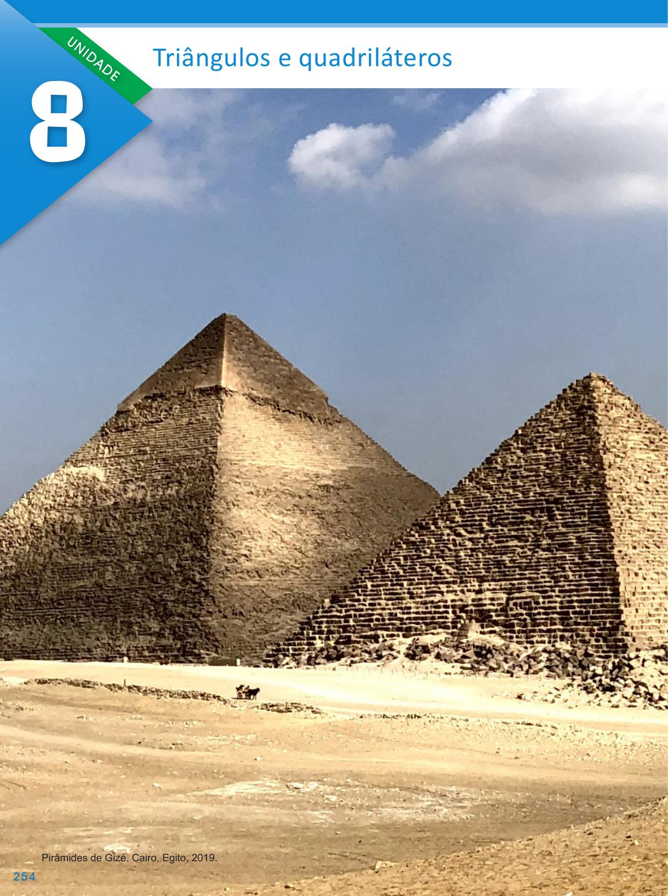UNIDADE 8 - CAPÍTULO 1
254
254
Capítulo 2 – Quadriláteros
Objetivos:
- Identificar e nomear adequadamente os elementos de um quadrilátero.
- Classificar os quadriláteros em paralelogramos e trapézios.
- Identificar os paralelogramos (retângulo, losango e quadrado).
- Identificar os trapézios (retângulo, isósceles e escaleno).
- Compreender a relação entre as medidas dos ângulos internos de um quadrilátero.
Probabilidade e estatística – Combate ao tráfico de animais silvestres
Objetivo:
- Analisar de forma crítica dados apresentados em gráficos de setores.
A Grande Pirâmide é a maior das três pirâmides situadas no deserto, em Gizé, nas proximidades da cidade do Cairo, no Egito. Construída por volta de 2 600 a.C. para abrigar o corpo do faraó Khufu (Quéops). As duas outras menores, em Gizé, foram construídas como túmulos de Khafre (Quéfren) e Menkaure (Miquerinos). A Grande Pirâmide é considerada uma das Sete Maravilhas do Mundo Antigo.
CONVERSE
1. As faces das pirâmides são formadas por polígonos. Ao observar as imagens, quais são os polígonos que compõem as faces laterais e a base da pirâmide? As faces laterais apresentam formas triangulares e a base da pirâmide é quadrada.
2. Em quais outras situações do cotidiano podemos observar essas formas geométricas? Em obras de arte, na construção civil, etc.
255
UNIDADE 8 - CAPÍTULO 1
Orientações específicas
Na abertura desta unidade, convidamos os alunos a observarem os polígonos que formam as faces das pirâmides do Egito. As duas fotografias apresentadas, uma aérea e a outra de satélite, nos permite identificar que as faces laterais dessas pirâmides são triangulares e que as bases são quadriláteros. Esses polígonos são comumente utilizados em nosso cotidiano e podem ser identificados em obras de arte, construções de monumentos, etc. Questione os alunos onde eles identificam essas formas geométricas na região em que moram.
255
| Principais habilidades da BNCC | EF07MA25, EF07MA24, EF07MA26 |
|---|---|
| Competências | CE8 , CG9 |
Atividade 1
Por meio de um experimento, convidamos os alunos a perceberam por que os triângulos apresentam rigidez. Eles farão comparações, construindo outros polígonos, e poderão perceber que outras formas geométricas podem se deformar, entendendo então por que a forma triangular é tão usada em construções.
Após a realização do experimento, utilizando varetas de churrasco, os alunos poderão perceber que nem sempre é possível construir um triângulo, mesmo conhecendo-se as medidas dos seus lados. Para que um triângulo possa ser construído, há uma condição de existência, a medida do maior lado desse triângulo deve ser menor que a soma das medidas dos outros dois lados. Dando continuidade à construção de triângulos, os alunos deverão então saber construir um triângulo utilizando régua e compasso.
EF07MA25
CAPÍTULO 1 - Triângulos
Sabendo que o triângulo é um polígono de três lados, veja agora a representação de um triângulo e os seus elementos:
► \(\overline{AB}\), \(\overline{BC}\) e \(\overline{AC}\) são os lados do triângulo;
► A, B e C são os vértices;
► a, b e c são os ângulos internos.
Indicamos o triângulo ABC por ΔABC.
Por ser a única forma geométrica que apresenta rigidez, ou seja, não se deforma, o triângulo é muito utilizado na formação de estruturas em diversas construções. Veja a seguir dois exemplos.

1. Podemos verificar a rigidez dos triângulos por meio de um experimento. Com um colega, façam o experimento a seguir.
Materiais
► 7 palitos de churrasco
► Fita adesiva
Procedimentos
► Selecionem três palitos.
UNIDADE 8 - CAPÍTULO 1
256
256
Atividade 1
a) Não foi possível deformar o triângulo.
b) Explique para os alunos que ao exercer uma força sobre o quadrado, ele se deformará. Seus ângulos mudaram de medidas transformando- -se em um losango. A sua forma inicial foi alterada, ou seja, ele não tem rigidez.
Sugerimos a construção de outros polígonos, além do triângulo e do quadrilátero, para que os alunos possam verificar como estes podem ser deformados
► Unam as extremidades dos palitos utilizando a fita adesiva.
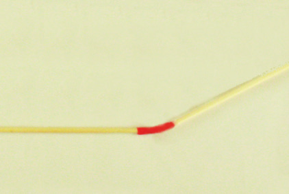► Um triângulo foi formado.
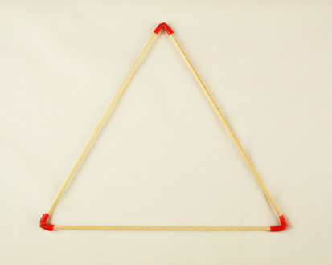► Repitam o procedimento com quatro palitos para formar um quadrado.
Com quatro palitos...
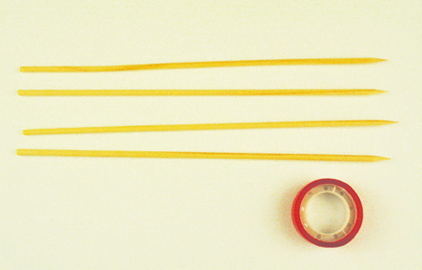... formamos um quadrado.
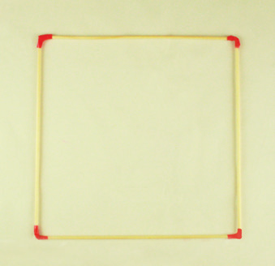a) Tentem deformar o triângulo. O que aconteceu? Não foi possível deformar o triângulo.
b) Tentem deformar o quadrado. O que aconteceu?
Explique aos alunos que ao se exercer uma força sobre o quadrado, ele se deformará. Seus ângulos mudaram de medidas transformando-se em um losango. A sua forma inicial foi alterada, ou seja, ele não tem rigidez.
Como vocês perceberam, conseguimos deformar o quadrado, o que não aconteceu com o triângulo. Essa deformação ocorre também com qualquer outro polígono com mais de quatro lados. Sugerimos a construção de outros polígonos, além do triângulo e do quadrilátero para que os alunos possam verifi car como estes podem ser deformados.
UNIDADE 8 - CAPÍTULO 1
257
257
Condição de existência de um triângulo
Comente com os alunos que só poderá existir um triângulo quando um de seus lados for maior que o valor absoluto (módulo) da diferença dos outros dois lados e menor que a soma dos outros dois lados.
Veja o resumo da regra abaixo:
| b - c | < a < b + c
| a - c | < b < a + c
| a - b | < c < a + b
Caso seja necessário, retome o conceito de módulo e de inequações para auxiliar na leitura das regras.
EF07MA24
Condição de existência de um triângulo
Será que podemos construir um triângulo utilizando qualquer medida para os seus lados? Vamos fazer um teste?
1. Com a ajuda do seu colega, peguem varetas de churrasco e cortem as varetas com as seguintes medidas:
a) Utilizando os palitos que medem 3 cm, 4 cm e 5 cm é possível construir um triângulo?
Sim, é possível.b) Utilizando os palitos que medem 3 cm, 4 cm e 8 cm é possível construir um triângulo? Não é possível.
c) Utilizando os palitos que medem 4 cm, 5 cm e 8 cm é possível construir um triângulo? Sim, é possível.
d) Utilizando os palitos que medem 4 cm, 5 cm e 9 cm é possível construir um triângulo? Não é possível.
e) Quando vamos construir um triângulo, podemos utilizar qualquer medida para seus lados? Não. Dependendo das medidas escolhidas não é possível construir um triângulo.
Por meio desse experimento, percebe-se que nem sempre é possível construir um triângulo conhecendo-se as medidas dos segmentos.
Para que possamos construir um triângulo, a medida de um lado deve ser menor que a soma das medidas dos outros dois lados. Observe:
► No caso em que os palitos medem 3 cm, 4 cm e 5 cm é possível construir o triângulo porque 5 < 3 + 4, 4 < 3 + 5 e 3 < 4 + 5.
UNIDADE 8 - CAPÍTULO 1
258
258
Durante a explicação do conteúdo, solicite aos alunos que tentem construir triângulos utilizando barbantes ou varetas de churrasco conforme proposto no livro. A intenção é que os alunos vejam que mesmo tendo três medidas, nem sempre é possível construir um triângulo.
Construção de triângulos utilizando régua e compasso
A partir dessa construção, é possível que os alunos verifiquem a condição de existência de um triângulo: a soma das medidas de comprimento de 2 lados de um triângulo deve ser maior do que a medida de comprimento do outro lado.
► Já na situação em que os palitos medem 3 cm, 4 cm e 8 cm temos que 8 > 3 + 4, por isso não foi possível construir o triângulo.
► No caso em que os lados medem 4 cm, 5 cm e 8 cm é possível construir o triângulo porque 8 < 4 + 5, 5 < 4 + 8 e 4 < 5 + 8.
► Já na situação em que os palitos medem 4 cm, 5 cm e 9 cm temos que 9 = 4 + 5, por isso não foi possível construir o triângulo.
Portanto, para que um triângulo possa ser construído:
A medida do lado de um triângulo qualquer deve ser menor que a soma das medidas dos outros dois lados. Esta é a condição de existência de um triângulo.
Construção de triângulos utilizando régua e compasso
Vamos construir um triângulo ABC cujos lados medem 3 cm, 4 cm e 5 cm com o auxílio de um compasso. Vejamos:
1.° Com uma régua, desenhe em seu caderno, \(\overline{AB}\) medindo 5 cm. Este segmento será a base do triângulo.
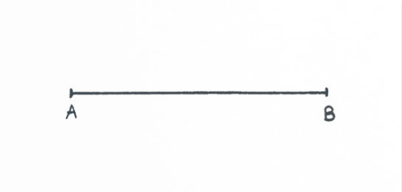2.° A partir do ponto A, com o auxílio de um compasso com abertura medindo 4 cm, marque um arco.
UNIDADE 8 - CAPÍTULO 1
259
259
Após a construção de um triângulo, propomos aos alunos que tracem seguimentos de retas predeterminadas, a fim de mostrar a eles que mesmo tendo três seguimentos, não necessariamente é possível construir um triângulo com as medidas dadas. Depois, apresentamos um fluxograma no qual são dados alguns passos para saber se um triângulo existe ou não, a partir de sua construção com régua e compasso. Se possível, refaça as atividades de construção propostas com o uso do software GeoGebra para que cheguem as mesmas conclusões.
EF07MA26
3.° Usando o compasso com abertura de 3 cm, coloque a ponta-seca no ponto B e trace outro arco, intersectando o arco anterior. O ponto de intersecção será o ponto C.
4.° Trace os segmentos \(\overline{AC}\) e \(\overline{BC}\) .
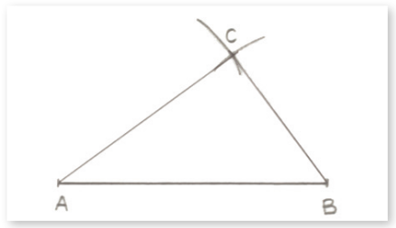Note que com essas medidas foi possível construir o triângulo ABC.
Agora vamos tentar construir um triângulo DEF, utilizando o compasso, cujos lados medem 8 cm, 4 cm e 3 cm.
1.° Trace \(\overline{DE}\) com 8 cm, como base do triângulo.
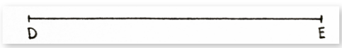2.° Em seguida, utilizando o compasso com abertura igual a 4 cm, coloque a ponta-seca em D e trace um arco.
UNIDADE 8 - CAPÍTULO 1
260
260
EF07MA26
3.° Com a ponta-seca do compasso em e abertura igual a 3 cm, trace outro arco.
4.° Note que não houve intersecção dos arcos traçados. Neste caso, não é possível construir um triângulo com essas medidas.
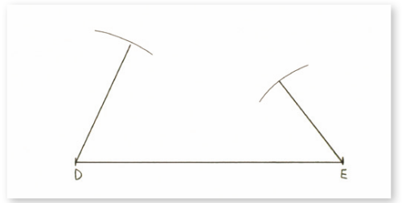Vamos verificar agora como podemos descrever por meio de um fluxograma a construção de um triângulo qualquer, conhecendo as medidas dos seus lados. Como exemplo, usaremos o triângulo ABC cujos lados medem 3 cm, 4 cm e 5 cm.
![Fluxograma de processo com uma tomada de decisão. O processo se inicia com o “Traçar o lado com maior medida”, segue na vertical com uma seta para a etapa “A partir do lado traçado, traçar os arcos com medida dos raios igual a medida dos demais lados”. Outra seta leva à pergunta, dentro de um losango, “Os arcos se cruzam?”. Do losango partem duas setas, para a esquerda e para a direita. À esquerda a opção “Sim”, leva à etapa “O triângulo existe”, da qual sai uma seta para a etapa “Descobrimos”. À direita do losango, a opção “Não”, leva à etapa “O triângulo não existe”, da qual sai uma seta para a etapa “Descobrimos”. Fim do processo para as duas decisões.](../../resources/images/unidade8/capitulo1/imagem23.png)
UNIDADE 8 - CAPÍTULO 1
261
Classificação dos triângulos
Comente com os alunos que podemos classificar os triângulos segundo dois critérios:
► Classificação quanto aos lados.
► Classificação quanto aos ângulos internos.
Classificação dos triângulos
Conforme estudado, os triângulos podem ser classificados de acordo com as medidas de seus lados e as medidas de seus ângulos internos. Vamos relembrá-las?
Classificação quanto às medidas dos lados
► Triângulo equilátero
Apresenta os três lados congruentes (mesma medida).
O ∆ABC (ao lado) é equilátero, pois \(\overline{AB}\) ≡ \(\overline{BC}\) ≡ \(\overline{AC}\).
► Triângulo isósceles
Apresenta dois lados congruentes.
O ∆DEF (ao lado) é isósceles, pois \(\overline{DE}\) ≡ \(\overline{DF}\).
O lado não congruente chama-se base.
► Triângulo escaleno
Apresenta os três lados com medidas diferentes.
O ∆GHI (ao lado) é escaleno.
Agora, vamos relembrar a outra classificação.
Classificação quanto às medidas dos ângulos internos
► Triângulo acutângulo
Tem os três ângulos internos agudos.
O ∆ABC (ao lado) é acutângulo,
pois a < 90º, b < 90º e c < 90º.
► Triângulo obtusângulo
Tem um ângulo interno obtuso e dois ângulos agudos.
O ∆MNO (ao lado) é obtusângulo, pois 90º < b < 180º.
► Triângulo retângulo
Tem um ângulo interno reto e dois ângulos agudos.
O ∆RST (ao lado) é retângulo, pois b = 90º.
UNIDADE 8 - CAPÍTULO 1
262
262
Encontre soluções
Atividade 1
Esta atividade pode ser realizada no caderno ou em uma folha A4. É importante que os alunos percebam que nem toda medida serve para os lados de um triângulo.
Atividade 2
Como o triângulo é isósceles, dois de seus lados têm a mesma medida. Portanto, o terceiro lado poderá medir 7 cm ou 4 cm.
Atividade 3
Não é possível construir um triângulo isósceles com dois lados medindo 3 cm, pois 7 > 3 + 3. Sendo assim, as medidas dos lados só podem ser 7 cm, 7 cm e 3 cm. O perímetro é 17 cm.
Atividade 4
EF < 8 + 10. Como é o maior lado, as medidas possíveis são 17 cm, 16 cm, 15 cm, 14 cm, 13 cm, 12 cm e 11 cm.
Atividade 8
a) 3 cm, 4 cm e 9 cm - não representam as medidas dos lados de um triângulo, pois 9 > 3 + 4.
b) 4 cm, 10 cm e 7 cm - representam as medidas dos lados de um triângulo, pois 4 < 10 + 7, 10 < 4 + 7 e 7 < 4 + 10.
c) 12 cm, 8 cm e 3 cm - não representam as medidas dos lados de um triângulo, pois 12 > 8 + 3.
d) 11 cm, 12 cm e 14 cm - representam as medidas dos lados de um triângulo, pois 11 < 12 + 14, 12 < 11 + 14 e 14 < 11 + 12.
e) 5 cm, 7 cm e 1 cm - não representam as medidas dos lados de um triângulo, pois 7 > 5 + 1.
Atividade 9
Perímetro: 29,7 12,3 + x + x = 29,7 2x = 29,7 - 12,3 2x = 17,4, x =
8,7 cm
Os outros lados medem 8,7 cm cada um.
ENCONTRE SOLUÇÕES
1. Com o auxílio de régua e compasso, tente construir, em seu caderno, um triângulo cujas medidas dos lados sejam:
a) 5 cm, 4,5 cm e 6 cm; É possível.
b) 7,5 cm, 6,5 cm e 6,5 cm; É possível.
c) 7 cm, 3,5 cm e 3,5 cm; Não é possível.
d) 9 cm, 5 cm e 3 cm. Não é possível.
2. Sabendo que as medidas dos lados de um triângulo isósceles são 7 cm e 4 cm, quais os possíveis valores para a medida do terceiro lado? 7 cm ou 4 cm.
3. Calcule, no caderno, o perímetro de um triângulo isósceles que tem um dos lados medindo 7 cm e outro lado medindo 3 cm. 17 cm
4. Em um triângulo DEF, DE = 10 cm e DF = 8 cm. Quais os possíveis valores para a medida do lado EF , sabendo que o maior lado é EF e que sua medida é um número inteiro? 17 cm, 16 cm, 15 cm, 14 cm, 13 cm, 12 cm e 11 cm.
5. Com três segmentos de reta, cada um medindo 12 cm, é possível construir um triângulo? Sim, pois 12 < 12 + 12 (triângulo equilátero).
6. Sabe-se que dois lados de um triângulo medem 5 cm e 8 cm e que o comprimento do terceiro lado, em cm, é um número inteiro. Se a medida do terceiro lado é o maior número inteiro possível, qual é a medida desse lado? 12 cm
7. Utilizando uma régua e um transferidor, em seu caderno, classifique os triângulos abaixo quanto às medidas dos lados e dos ângulos internos.
a)
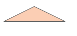 Isósceles e obtusângulo.b)
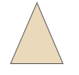 Isósceles e acutângulo.c)
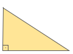 Escaleno e retângulo.d)
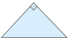 Isósceles e retângulo.e)
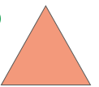 Equilátero e acutângulo.8. Quais as alternativas que representam as medidas dos lados de um triângulo? Justifique sua resposta.
a) 3 cm, 4 cm e 9 cm;
b) X 4 cm, 10 cm e 7 cm;
c) 12 cm, 8 cm e 3 cm;
d) X 11 cm, 12 cm e 14 cm;
e) 5 cm, 7 cm e 1 cm.
9. Um triângulo isósceles tem o lado não congruente medindo 12,3 cm. Qual é a medida dos outros dois lados, sabendo que o perímetro desse triângulo é de 29,7 cm? 8,7 cm
10. Um triângulo equilátero tem 11,1 cm de perímetro. Qual é a medida do lado desse triângulo? 3,7 cm
Soma das medidas dos ângulos internos de um triângulo
Vamos fazer um experimento para descobrirmos a soma das medidas dos ângulos internos de um triângulo?
1.° Desenhe, em uma folha de papel sulfite, um triângulo qualquer e destaque com cores diferentes os seus ângulos internos.
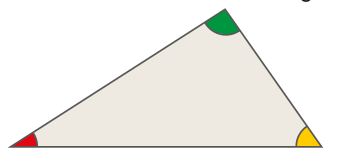263
UNIDADE 8 - CAPÍTULO 1
263
Solicite aos alunos que façam esse experimento com triângulos diferentes para verificarem que a soma dos ângulos internos é 180º em qualquer triângulo.
Encontre soluções
Atividade 1
Em um triângulo retângulo, o ângulo reto mede 90º. Como a soma das medidas dos ângulos internos de um triângulo é igual a 180º, então chamando de x a medida dos dois ângulos iguais, tem-se:
90º + x + x = 180º
2x = 180º ‒ 90º
2x = 90º
x = 45º
Os ângulos internos medem 90º, 45º e 45º.
Atividade 2
a) x + x + x = 180º
3x = 180º
x = 60º
b) 110º + x + x = 180º
2x = 180º ‒ 110º
2x = 70º
x = 35º
c) x + 25º + 90º = 180º
x = 180º ‒ 90º ‒ 25º
x = 65º
d) 2x + x + x + 4º = 180º
4x = 180º ‒ 4º
4x = 176º
x = 44º
EF07MA24
2.° Agora, recorte o triângulo em três partes.
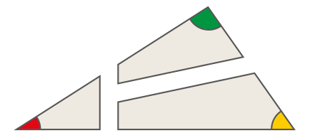Perceba que cada uma dessas partes tem um ângulo interno do triângulo original.
3.° Junte esses três ângulos internos, de modo que os três vértices coincidam.
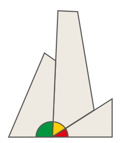Note que eles formam um ângulo de 180º.
Em um triângulo qualquer, a soma das medidas dos ângulos internos é sempre igual a 180º.
Como exemplo, vamos verificar as medidas dos ângulos internos BÂC e ABC, sendo med(C) = 90º.
Assim:
x + 2x + 90º = 180º
3x = 180º − 90º
3x = 90º
\(\dfrac{90°}{3}\)
x = 30º
med(BÂC) = 2 ∙ x = 2 ∙ 30º = 60º
med(ABC) = 30º
As medidas dos ângulos internos do triângulo são 30º, 60º e 90º.
264
UNIDADE 8 - CAPÍTULO 1
264
Atividade 3
x + 1º + x + 2º + x + 3º = 180º
3x = 180º ‒ 6º
3x = 174º
x = 58º
Os ângulos medem 59º, 60º e 61º.
Atividade 4
a) 72º + x = 180º
x = 108º
b) 40º + 90º + y = 180º
y = 180º - 130º
y = 50º
x = 180º - 50º
x = 130º
c) y = 180º - 105º
y = 75º
x = 180º - 75º - 75º
x = 30º
d) y = 180º - 66º
y = 114º
x + x + 114º = 180º
2x = 66º
x = 33º
Atividade 5
x + 2x + (x/2) = 180°
3x + 6x + x = 540°
10x = 540°
x = 54º
O ângulo ˆC mede 54º : 3 = 18º.
ENCONTRE SOLUÇÕES
1. Num triângulo retângulo, dois dos ângulos internos têm a mesma medida. Qual é a medida de cada ângulo interno? 90º, 45º e 45°.
2. Observe os triângulos a seguir e, em seu caderno, determine o valor de x.
a)
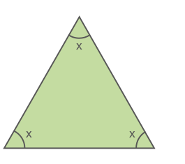 x = 60ºb)
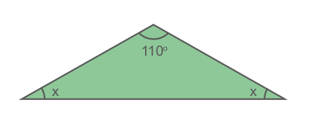 x = 35ºc)
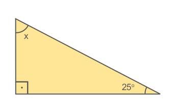 x = 65ºd)
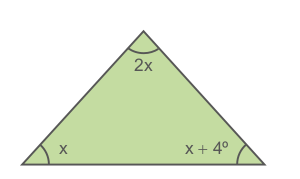 x = 44º3. Os ângulos internos de um triângulo medem x + 1º, x + 2º e x + 3º. Qual é a medida de cada ângulo interno? 59º, 60º e 61º.
4. Em seu caderno, determine o valor de x em cada triângulo a seguir.
a)
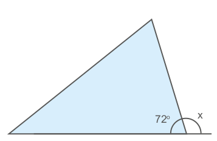 x = 108ºb)
 x = 130º
x = 130º
c)
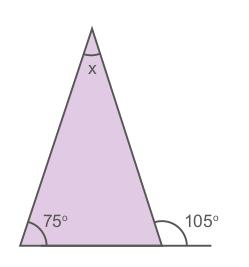 x = 30ºd)
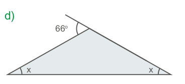 x = 33º5. Num triângulo, os ângulos internos Â, B̂ e Ĉ medem, respectivamente, x, 2x e \(\frac{x}{3}\). Determine a medida do ângulo Ĉ. 18º
265
UNIDADE 8 - CAPÍTULO 1
265
Atividade 6
50º + 60º + z = 180º
z = 180º - 110º
z = 70º
z + y = 180º
70º + y = 180º
y = 110º
40º + y + x = 180º
x = 180º - 150º
x = 30º
Atividade 7
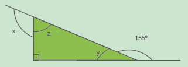
y = 180º - 155º = 25º
z = 180º - 90º - 25º = 65º
x = 180º - 65º = 115º
Atividade 9
x + x + 70º = 180º
2x = 180º - 70º
x = 55º
Atividade 10
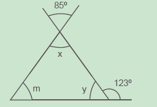x = 85º (ângulos opostos pelo vértice). y = 57º (ângulos complementares).
m = 180º - 85º - 57º
m = 38º
6. Na figura abaixo, determine os valores de x, y e z. x = 30º, y = 110º e z = 70º.
![Ilustração de um triângulo escaleno amarelo. A reta horizontal é a maior e faz a base da figura, e o lado esquerdo é maior que o direito. O ângulo da base esquerda, é 40º, e o ângulo da base direita, é 60º. Uma reta inclinada para a esquerda e para baixo, sai do vértice superior até encostar na base, demarcando quatro ângulos, dois ângulos no vértice superior e outros dois ângulos na junção da reta inclinada com a base. Marcação dos ângulos: ângulo x, localizado entre o lado esquerdo da reta inclinada com o lado esquerdo da figura; ângulo 50º, localizado entre o lado direito da reta inclinada com o lado direito da figura; ângulo y, localizado entre o lado esquerdo da reta inclinada com a base da figura; ângulo z, localizado entre o lado direito da reta inclinada com a base da figura.](../../resources/images/unidade8/capitulo1/imagem47.png)
7. Observe o triângulo a seguir.
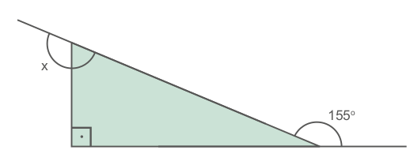 115ºDetermine o valor de x.
8. Em uma folha de papel, com auxílio de régua e compasso, construa um triângulo ABC isósceles em que os lados congruentes meçam 8 cm e a base 6 cm. Nomeie os vértices e as medidas dos ângulos internos desse triângulo, conforme mostra a figura.
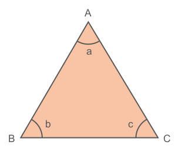Em seguida, trace uma linha que passa pelo vértice A, formando um ângulo de 90º com o lado \(\overline{BC}\).
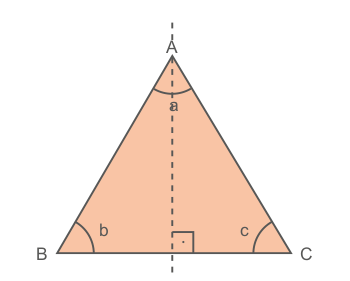Dobre o triângulo nesta linha, sobrepondo as duas partes do triângulo e responda, em seu caderno.
a) As duas partes do triângulo são idênticas? Sim.
b) Como se chama a linha traçada que passa pelo vértice A? Eixo de simetria.
c) Podemos dizer que os ângulos da base possuem a mesma medida? Sim. Em um triângulo isósceles os ângulos da base são congruentes.
9. O triângulo MNP a seguir é isósceles, sendo que \(\overline{MN}\) ≡ \(\overline{MP}\) . Sabendo que med \(N\widehat{M}P\) = 70º, determine a medida dos outros dois ângulos internos desse triângulo.
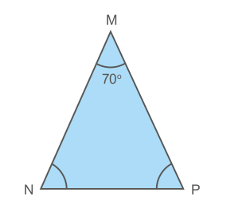 55º e 55º.10. Determine o valor de m.
m = 38º266
UNIDADE 8 - CAPÍTULO 1
266